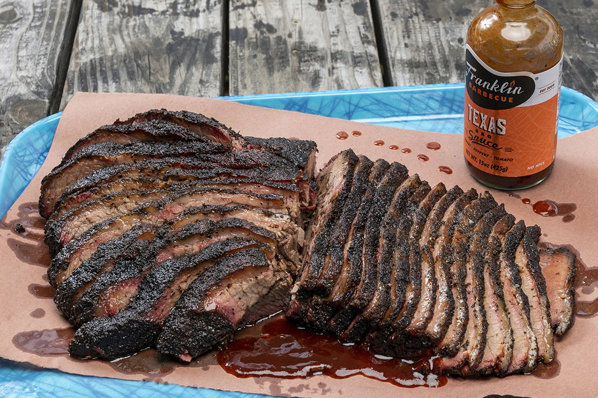

Franklin Brisket

Description
Barbecue is one of God's favorite foods. Good brisket is barbecue's finest barbecue.
Preparation is very easy, but quite time consuming.
Ingredients:
- 3-5lb brisket
- salt
- pepper
- vinegar/water spray
- smoke
Equipment:
- butcher's paper or foil
- smoker with water filled drip pan
- hardwood suitable for your smoker (alder/maple/hickory/oak/mesquite)
Directions:
- Heat smoker to 270-285°C
- Lightly coat meat with salt & pepper
- Place brisket in barbecue for about three hours, checking very
INfrequently
- If brisket seems dry, spray with vineger/water mix
- If bark has formed, wrap brisket in paper and return to oven for another
five hours or so
- Remove when meat is "bendy"
- Let rest until meat can be handled, then slice crosswise in 5 to 10mm strips
- Add sauce and serve
Caloric content: You are probably happier not knowing.